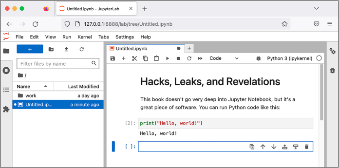
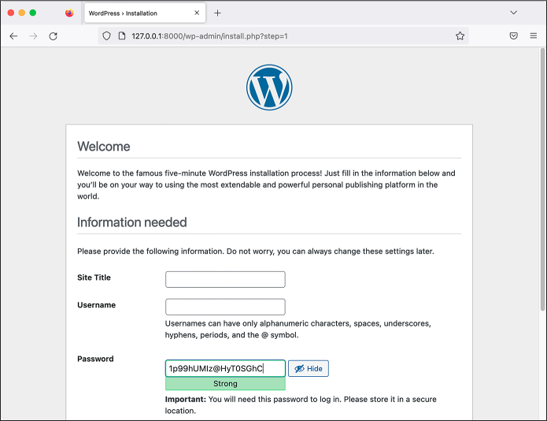
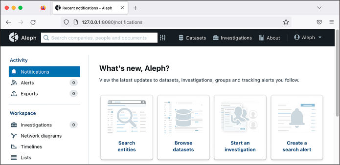
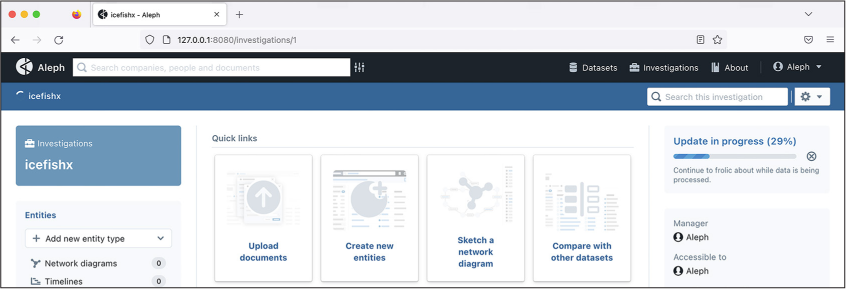
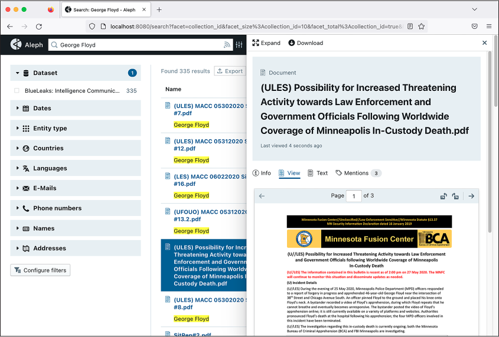

Aleph is developed by the Organized Crime and Corruption Reporting Project, a group of investigative journalists largely based in eastern Europe and central Asia. The tool allows you to index datasets, extracting all the text they contain so they’re easy to search. You can use Aleph to search for keywords or entities (like people, companies, organizations, or addresses) and discover related entities in other datasets. Aleph also performs optical character recognition (OCR), which, as mentioned in Chapter 1, takes flat images like scanned documents or screenshots, uses artificial intelligence to recognize any words, and converts those words into text that you can search or copy and paste.
In the first half of this chapter, you’ll learn the ins and outs of using Docker and Docker Compose, the software required for running Aleph. In the second half, you’ll use your new Docker skills to run an Aleph server, then index and search part of the BlueLeaks dataset.
Introducing Docker and Linux Containers¶
Docker is the most popular software for running Linux containers, a type of software package. Linux containers can organize ready-to-go Linux software—complete with all of its dependencies, configuration, and source code—into a single bundle called a container image that you can quickly and easily run. The software inside containers is isolated from the rest of your computer; it can’t access any of those files unless you allow it to do so.
For example, let’s say you want to set up the popular WordPress blogging
software in Linux. You use a package manager like apt to install the
software WordPress depends on. You then put the WordPress source code in
a location on your disk with the right permissions, configure your web
server software so it knows where to look for that source code, and
configure a database to store the blog’s data. You can then save all
this work in a Linux container called wordpress and reuse that container to spin up
new WordPress sites with a single Docker command.
Because Linux containers are isolated from the rest of your computer, multiple WordPress containers can run at the same time without interfering with each other. If someone hacks the software running in your container, they won’t be able to access any of the data located elsewhere on your computer—at least, not without also hacking Docker itself. This is why Dangerzone relies on Linux containers: if a malicious document manages to hack the Dangerzone container you’re using, your computer should still be safe. In addition to software like WordPress, you can use Linux containers to run commands in most Linux distributions without having to install those operating systems.
Docker comes with two commands you’ll use in this chapter:
docker, which runs
individual containers, and docker-compose, which lets you run multiple
containers at once. You’ll practice using the docker command by running Linux containers
for the Ubuntu and Kali Linux operating systems, as well as for the data
science software Jupyter Notebook. You’ll then use
docker-compose to run a
WordPress server and an Aleph server. Aleph requires a small network of
services that communicate with each other, but as with WordPress, you
can use a single Docker command to start up all these individual servers
in their own containers. This process should prepare you to run Linux
containers with Docker for other purposes later in the book.
This chapter covers two applications for running Docker containers: Docker Desktop and Docker Engine. Docker Desktop runs Docker containers on workstation computers in a Linux VM. Docker Engine, on the other hand, runs Docker directly on a Linux computer. Windows and Mac users, turn to Exercise 5-1 to set up Docker Desktop. Linux users, turn to Exercise 5-2 to install Docker Engine.
NOTE It’s possible for Linux users to install Docker Desktop, but I don’t recommend it for this chapter. Without a VM, Docker will be free to use all of your computer’s memory and processors, which will make indexing datasets in Aleph much faster.
Exercise 5-1: Initialize Docker Desktop on Windows and macOS¶
When you installed Dangerzone in Exercise 1-3, Docker Desktop also should have been installed, since Dangerzone requires it. Confirm that Docker Desktop is installed by checking whether your Applications folder in macOS or Start menu in Windows has a Docker program; if not, download it from https://www.docker.com/products/docker-desktop/.
Open Docker and follow the onscreen instructions to initialize the software. You may need to reboot your computer. Docker Desktop’s Linux VM should be up and running before you can use Docker. If you click the Docker icon in your system tray and it tells you that Docker Desktop is running, you’re ready to proceed.
If you’re using Windows, you can use either PowerShell or Ubuntu with
WSL for this chapter, since the docker and docker-desktop commands should run fine in either.
Even when you use Docker from PowerShell, it technically relies on WSL
under the hood.
If you’re using macOS, click the Docker icon in your system tray and choose Preferences. Switch to the Resources tab and make sure that the Memory resource is set to at least 6GB—higher if you have more to spare—to be sure Docker’s Linux VM has enough memory to handle Aleph. Click Apply & Restart.
For either operating system, to test whether Docker is working, open a terminal and run this command:
docker run hello-world
This command should run a Docker container image called
hello-world. If you don’t
already have the hello-world
image on your computer, Docker should download it first. The output
should look something like this:
Unable to find image 'hello-world:latest' locally
latest: Pulling from library/hello-world
2db29710123e: Pull complete
Digest: sha256:10d7d58d5ebd2a652f4d93fdd86da8f265f5318c6a73cc5b6a9798ff6d2b2e67
Status: Downloaded newer image for hello-world:latest
Hello from Docker!
This message shows that your installation appears to be working correctly.
--snip--
Your computer is ready to run Linux containers. Skip to the Running Containers with Docker section on page 123.
Exercise 5-2: Initialize Docker Engine on Linux¶
Follow the detailed instructions for Server rather than Desktop at https://docs.docker.com/engine/install/ to install Docker Engine for your version of Linux. In Ubuntu, the installation process involves adding a new apt repository to your computer and installing some Docker packages.
Docker Engine on Linux requires root access to run containers. After
completing this exercise, if you’re using Linux, add sudo to the beginning of all
docker or
docker-compose commands in
this book. To run all your Docker commands as root automatically without
using sudo, check the Docker
Engine documentation for instructions on adding your Linux user to the
docker group; however, keep
in mind that doing so decreases your computer’s security and isn’t
recommended.
Once Docker is installed, open a terminal and run:
sudo docker run hello-world
This command runs a Docker container image called hello-world. If you don’t already have the
hello-world image on your
computer, Docker downloads it first. The output should look something
like this:
Unable to find image 'hello-world:latest' locally
latest: Pulling from library/hello-world
2db29710123e: Pull complete
Digest: sha256:507ecde44b8eb741278274653120c2bf793b174c06ff4eaa672b713b3263477b
Status: Downloaded newer image for hello-world:latest
Hello from Docker!
This message shows that your installation appears to be working correctly.
--snip--
If the hello-world container
ran successfully, you can now use the docker command on your computer. Next, run
the following command to install the docker-compose package, which will give you access to
the docker-compose command:
sudo apt install docker-compose
Your computer is now ready to run Linux containers.
PODMAN¶
Podman (https://podman.io is another software solution for running Linux containers. It’s lightweight and doesn’t require root access, which makes it more secure than Docker. I prefer Podman—in fact, Dangerzone for Linux uses it instead of Docker. However, Docker is more popular, and some containers that work in Docker may not run properly in Podman. I recommend sticking with Docker while you follow along with this chapter. If you become a Linux container nerd, you can try out Podman on your own later.
Running Containers with Docker¶
The docker command you’ve
just installed allows you to run Linux containers on your computer. In
this section you’ll learn how to use this command to open a shell inside
containers, force running containers to quit, mount volumes to save
persistent data or access certain files, set environment variables, and
publish ports so your computer can connect to network services inside
your container. This foundational understanding of Docker will prepare
you to run Docker containers in Exercise 5-3 and help you troubleshoot
any problems you later encounter with Aleph.
NOTE For additional information on Docker commands, run docker help or check the documentation at https://docs.docker.com.
Running an Ubuntu Container¶
You’ll begin by learning how to run a Linux container with the Ubuntu operating system in it. People often base more complicated container images on the Ubuntu container image to access all Ubuntu software that apt can install. An Ubuntu container is also a convenient way to access a shell on a clean Ubuntu system, allowing you to install software or test programs.
Docker commands use the docker command syntax. Run the following to
start your own Ubuntu container (if you’re using Linux, remember to add
sudo):
docker run -it ubuntu:latest bash
This command runs ubuntu:latest, the latest version of the ubuntu image. If that image
isn’t already on your computer, Docker automatically downloads it from Docker Hub, a library of public container images at
https://hub.docker.com. Next, the bash command runs, giving you shell access inside that container. Include the -it argument, which is short for -i (or --interactive) and -t (or --tty), after docker run whenever you plan to open a shell in a container, so that any commands you type in the terminal run in the container. Without the -it argument, the bash shell would immediately quit before you could run any commands, as would the container.
This command gives me the following output:
micah@trapdoor ~ % docker run -it ubuntu:latest bash
Unable to find image 'ubuntu:latest' locally
latest: Pulling from library/ubuntu
d19f32bd9e41: Pull complete
Digest: sha256:34fea4f31bf187bc915536831fd0afc9d214755bf700b5cdb1336c82516d154e
Status: Downloaded newer image for ubuntu:latest
root@5661828c22a2:/#
Since I didn’t already have the ubuntu:latest image, the command downloaded that
image, started the container, and dropped me into a bash shell. I can
now run whatever commands I want inside this container, such as
installing software or running programs.
Running the exit command
quits the container. If you start a new ubuntu:latest container, it contains none of the old
container’s data. For example, with the following commands, I create a
file called test.txt in one container, quit the container, and start a
new one:
root@5661828c22a2:/# echo "Hacks, Leaks, and Revelations" > test.txt
root@5661828c22a2:/# cat test.txt
Hacks, Leaks, and Revelations
root@5661828c22a2:/# exit
exit
micah@trapdoor ~ % docker run -it ubuntu:latest bash
root@e8888f73a106:/# cat test.txt
cat: test.txt: No such file or directory
root@e8888f73a106:/#
The output shows that test.txt no longer exists. For data in a container to persist when you rerun the container image, you need to use volumes, as we’ll discuss in Mounting and Removing Volumes on page 125.
Listing and Killing Containers¶
If you’ve exited your Ubuntu container, run a new one. With that
container running in the background, open a second terminal window and
run the docker ps command.
This should show you a list of all containers currently running. Here’s
the output I get, for example:
CONTAINER ID IMAGE COMMAND CREATED STATUS PORTS NAMES
337a795a53b2 ubuntu:latest "bash" 9 minutes ago Up 9 minutes epic_borg
When you start a container with
docker run, you can give it
a name with the arguments --name your_container_name. Otherwise, it will be
assigned a random name. The container in my docker ps output is called epic_borg.
To kill a container, or force it to quit, you run
docker kill
container_name. For
example, running the following command in my other terminal window quits
my epic_borg container:
docker kill epic_borg
Run this command for your own container. If you switch back to your other terminal window, the container should have quit, and you should be back in your normal shell.
When you exit a container, Docker still keeps track of it, allowing you
to restart it if you want. To see all of the containers Docker is
tracking, including ones that aren’t running anymore, you run
docker ps -a (short for
--all). Here’s the output I
get when I run this command:
CONTAINER ID IMAGE ... STATUS PORTS NAMES
337a795a53b2 ubuntu:latest ... Exited (0) 43 minutes ago nostalgic_keldysh
It’s good practice to run docker rm container_name to prune your stopped Docker
containers when you’re done using them. For example, I’d run
docker rm nostalgic_keldysh
to remove my nostalgic_keldysh container.
You can run docker container prune to remove all stopped containers at
once. When I ran this command, I saw the following output:
WARNING! This will remove all stopped containers.
Are you sure you want to continue? [y/N]
I entered y and got the
following output:
Deleted Containers:
337a795a53b25e6c28888a44a0ac09fac9bf6aef4ab1c3108844ca447cce4226
Total reclaimed space: 5B
This displays the container ID, a long string of random-looking text, for each container that’s deleted. In my case, I deleted a single container.
Mounting and Removing Volumes¶
Containers support volumes, which you can think of as folders in your container designed to store persistent data. You can use volumes to save changes you’ve made to your container after you quit and remove it.
For example, suppose you start a container without any volumes that runs the PostgreSQL database software. Any data you add to it is saved to the /var/lib/postgresql/data folder inside your container. When you quit and remove the container, you’ll lose all of your data. If you instead mount a folder on your host operating system into /var/lib/postgresql/data on the container, when software in the container accesses that folder, it’s actually accessing the folder on your host operating system. You’ll still have all of your data when the container closes and is removed, and you can start the container again in the future with the same data.
Docker has two main types of volumes: bind mounts, or folders from your host machine mounted into a container, and normal Docker volumes, where Docker keeps track of your persistent folders without your having to provide a path on your host operating system. For example, if you want to store your database container’s data in the /Volumes/datasets/volumes/db-data folder on your host filesystem, you would mount this folder as a bind mount. If you don’t need your data to be stored in a specific folder on your host, just use a normal volume, and Docker will keep track of where it’s stored.
NOTE Storing volumes in a Linux VM with Docker Desktop makes them faster than bind mounts, but your VM might run out of disk space if your volumes get too big (if you index large datasets into Aleph, for example). In macOS, you can increase the amount of disk space available to your VM in the Docker Desktop preferences under the Resources tab. In Windows, your VM will use as much space on the C: drive as it needs, but again, this drive could run out of disk space if you’re dealing with large amounts of data. Alternatively, you could use bind mounts instead of volumes, storing data on external disks.
You can also use volumes to access data outside of a container while that container is running. In Exercise 5-5, you’ll bind-mount your datasets USB disk as a folder in an Aleph container. This way, your container can access the BlueLeaks dataset, allowing you to index it.
Use this command to start a container with a volume:
docker run --mount type=volume,src=volume-name,dst=/container/path image
Use this command to start a container with a bind mount:
docker run --mount type=bind,src=/path/on/host,dst=/container/path image
The --mount argument tells
Docker that you’re going to mount a volume and is followed by
comma-separated details about that volume. The type parameter specifies the type of mount:
volume for volumes and
bind for bind mounts. The
src parameter specifies the
source of the volume or bind mount. For volumes, its value is the volume
name; for bind mounts, its value is the absolute path on your host
filesystem to the folder you want to mount. The dst parameter specifies the destination of
the volume or bind mount, in both cases the absolute path of the folder
inside the container to which you’re mounting.
Let’s practice these two commands, starting with mounting a volume. Run the following code (your prompt will be different from mine):
micah@trapdoor ~ % docker run -it --mount type=volume,src=test-data,dst=/mnt
ubuntu:latest bash
root@50b8b6f86e4d:/# echo "Hacks, Leaks, and Revelations" > /mnt/test.txt
root@50b8b6f86e4d:/# exit
This code starts an Ubuntu container and mounts a volume called
test-data into the /mnt
folder in the container. It then saves some data into the
/mnt/test.txt file and exits the container.
Use the following commands to open a separate container, mounting the same volume into it to see whether your data is still there (again, your command prompt will be different):
micah@trapdoor ~ % docker run -it --mount type=volume,src=test-data,dst=/mnt
ubuntu:latest bash
root@665f910bb21c:/# cat /mnt/test.txt
Hacks, Leaks, and Revelations
root@665f910bb21c:/# exit
This time, because you mounted /mnt in the test-data volume, the data persisted.
To see a list of the volumes that Docker is managing, run the
docker volume ls command. You
should get the following output:
DRIVER VOLUME NAME
local test-data
You can remove volumes only from containers that have been completely
removed from Docker. If you’ve just stopped a container but Docker is
still tracking it, it won’t let you remove the volume. Completely remove
all stopped containers by running docker container prune, which then allows you to remove any
volumes attached to those containers. You should get the following
output:
WARNING! This will remove all stopped containers.
Are you sure you want to continue? [y/N]
Enter y to continue:
Deleted Containers:
665f910bb21ca701be416da94c05ee6a226117923367d2f7731693062683a402
50b8b6f86e4d0eab9eb0ba9bf006ae0473525d572ea687865f8afca8a92e7087
Total reclaimed space: 82B
You can now run docker volume rm volume-name to remove any volumes attached
to those containers, or run docker volume prune to delete all volumes that Docker
containers aren’t currently using. Run
docker volume rm test-data to
remove the test-data volume,
then run the docker volume ls
command again. This time, you shouldn’t see any volumes listed in the
output.
Next, you’ll practice bind mounting by mounting the folder on your host system containing the BlueLeaks dataset into a container running Kali Linux. This Linux distribution is designed for penetration testing, in which people hack into systems with permission from the system owners to find and fix security flaws.
If you’re a Mac or Linux user, run the following command, replacing the path with the appropriate path on your machine:
docker run -it --mount type=bind,src=/Volumes/datasets/BlueLeaks-extracted,dst=/blueleaks
kalilinux/kali-rolling bash
This should run a kalilinux/kali-rolling container, mounting your
BlueLeaks-extracted folder in it at the path /blueleaks, and drop
you into a bash shell.
Windows users might have trouble bind-mounting a folder on the
datasets USB disk into a container, because Docker Desktop for Windows
runs Linux containers using WSL, and WSL doesn’t always have access to
your USB disks. To avoid this problem, if you plugged in your USB disk
after opening a WSL terminal or using Docker, restart WSL by running
wsl --shutdown in PowerShell.
You should see a notification from Docker Desktop asking if you want to
restart it. Click Restart. After you restart WSL with the USB disk
already plugged in, Docker should be able to mount it. (See Appendix
A for more information.)
If you’re using Windows with PowerShell to work through this chapter,
run the following command to mount the folder that contains the
BlueLeaks data into /datasets, replacing
D:/BlueLeaks-extracted with the appropriate path:
docker run -it –mount type-bind,src=D:/BlueLeaks-extracted,dst=/blueleaks kalilinux/
kali-rolling bash
If you’re using Ubuntu with WSL in Windows, mount the BlueLeaks folder by accessing the D: drive from /mnt/d with the following syntax:
docker run -it --mount type=bind,src=/mnt/d/BlueLeaks-extracted,dst=/blueleaks kalilinux/
kali-rolling bash
From within your Kali container, you can now use the tools that come with Kali on the BlueLeaks dataset. By default, Kali customizes your bash shell to look slightly different than Ubuntu does. The prompt will look something like this:
┌──(root㉿6a36e316663c)-[/]
└─#
Docker containers are assigned random hostnames. In this case,
root is the name of the
current user, 6a36e316663c
is the hostname of the computer, and / is the current working directory. From
here, run ls /blueleaks/ to
list the files in the BlueLeaks folder:
211sfbay iowaintex pleasantonpolice
Securitypartnership jerseyvillagepd prvihidta
acprlea jric pspddoc
acticaz kcpers publicsafetycadets
--snip--
NOTE You can learn more about volumes and bind mounts at https://docs.docker.com/storage/.
Passing Environment Variables¶
You can also use environment variables, introduced in Chapter 4, to pass sensitive information like database
credentials into containers. When starting up a container, you pass an
environment variable into it using the -e variable_name = value (the -e is short for --env) arguments. Programs in the container
can then access the value of that variable.
For example, run the following command:
docker run -it -e DB_USER=root -e DB_PASSWORD=yourefired ubuntu:latest bash
This starts an Ubuntu container with the variable DB_USER set to root and the variable DB_PASSWORD set to yourefired. From inside the container, try
displaying the values of those variables to confirm that you can access
this information there, using the echo $``variable_name command like so:
bash-5.1# echo $DB_USER
root
bash-5.1# echo $DB_PASSWORD
yourefired
You’ll practice passing environment variables to containers further in Exercise 5-3.
Running Server Software¶
You can also run robust, fully configured software on the operating systems running in containers. This technique is mostly used to access server software, software to which you can connect over a network using web browsers, database clients, or other similar programs. You’ll need this skill for Exercise 5-3 and, eventually, to run Aleph.
Different computers (or VMs, or containers), called hosts, are identified by IP addresses or hostnames. Your own computer’s IP address is always 127.0.0.1, and its hostname is always localhost. Hosts can listen on different ports for incoming network connections, meaning the host is available for other hosts to connect to over a network. A port is a number that the computer uses to sort out which network traffic should go to which application.
Different services have different default ports. For example, HTTP and HTTPS services are two types of websites that use port 80 and port 443, respectively. When you load the URL http://example.com in your browser, it will try to connect to the host example.com on port 80 using HTTP. If you load https://example.com, it will try to connect on port 443 using HTTPS.
However, you can change the default ports that services use. If you’re running an HTTP service on localhost on port 5000, the URL for that service would be http://localhost:5000, where http:// means you’re using the HTTP protocol, localhost means you’re connecting to the localhost host, and :5000 means you’re connecting to port 5000 instead of the default HTTP port, 80.
To connect to a network port inside your Docker container, you must
publish a network port when you run your container, making that port
available on the host operating system. To do so, use the arguments
-p host_port:container_port (-p is short for --publish). Once the container starts up, your
host operating system will listen on host_port. If you connect to that port,
your connection will be forwarded to container_port inside the container.
Let’s look at an example of running server software and publishing a port so that you can connect to it from your host computer. Run the following command:
docker run -p 8000:8888 jupyter/scipy-notebook:latest
This command should download and run the latest version of the
jupyter/scipy-notebook container image, which includes the most
popular science-related Python libraries. (Jupyter Notebook is a
powerful data science tool for creating and sharing computational
documents.) Jupyter Notebook starts an HTTP service on port 8888 in the
container. The arguments -p 8000:8888 mean that host_port is 8000 and container_port is 8888. If you connect to localhost on port
8000, using either the URL
http://localhost:8000 or
http://127.0.0.1:8000,
you’ll now actually connect to port 8888 inside the container.
Here’s the output from the previous command:
Unable to find image 'jupyter/scipy-notebook:latest' locally
latest: Pulling from jupyter/scipy-notebook
08c01a0ec47e: Pull complete
--snip--
Status: Downloaded newer image for jupyter/scipy-notebook:latest
Entered start.sh with args: jupyter lab
Executing the command: jupyter lab
--snip--
To access the server, open this file in a browser:
file:///home/jovyan/.local/share/jupyter/runtime/jpserver-7-open.html
Or copy and paste one of these URLs:
http://cc4a555569e4:8888/lab?token=d570e7d9ecc59bbc77536ea4ade65d02dd575ff3c6713dd4
or http://127.0.0.1:8888/lab?token=d570e7d9ecc59bbc77536ea4ade65d02dd575ff3c6713dd4
The output shows that this command downloaded the latest version of the jupyter/scipy-notebook container image from Docker Hub and then ran it. This time, instead of starting a shell in the container, the container runs only the service it was designed for, which is Jupyter Notebook. Each time Jupyter Notebook outputs a log message, the terminal window now displays it.
The end of the output shows three different URLs to access the server. Copy the final URL, paste it in your browser, and change the port number from 8888 to 8000 before you load it. When you connect to your own computer on port 8000 (127.0.0.1:8000), your connection will be forwarded to the container on port 8888. Your browser should load the Jupyter Notebook service running in your container. When this happens, you should see more log messages appear in the terminal.
Figure 5-1 shows a web browser running on my Mac, connected to a Jupyter Notebook server, which is running in my Linux container.

Figure 5-1: Jupyter Notebook running in a container
The container keeps running until you press CTRL-C to quit it. If you need to run any other terminal commands while the container is still running, you’ll need to open a separate terminal window. For now, press CTRL-C in your terminal to exit the Jupyter Notebook container.
You won’t use Jupyter Notebook further in this book, but you’ll rely on your new understanding of running server software to run a WordPress website in Exercise 5-3.
NOTE For more information about Jupyter Notebook, visit https://jupyter.org, and for thorough documentation on running Jupyter Notebook in Docker, see https://jupyter-docker-stacks.readthedocs.io.
Freeing Up Disk Space¶
Docker images take up a lot of disk space. To free up space quickly, use the following command to delete all of the container images you’ve downloaded from Docker Hub and other data that Docker stores (besides volumes):
docker system prune -a
Since this command doesn’t delete volumes, it won’t delete any of your
important data. The next time you use docker run commands, you’ll just redownload the
container images you need from Docker Hub.
Exercise 5-3: Run a WordPress Site with Docker Compose¶
More complicated software like Aleph requires running multiple
containers that interact with each other. To do that, you’ll need to
learn to use Docker Compose, as the docker run command’s arguments quickly become
hard to keep track of when used to run more complicated
containers—those with volumes, environment variables, publishing
ports, and so on. It’s especially unwieldy to run a single application
that requires multiple containers at once.
Docker Compose makes it easier to define and run such Docker applications. The tool allows you to configure your containers (choosing images, volumes, environment variables, published ports, and so on) in a single file, and to start and stop all of your containers with a single command. I often use Docker Compose even for software that requires a single container, because it simplifies keeping track of all of the configuration. You’ll need to be proficient in Docker Compose to run an Aleph server.
In this exercise, you’ll familiarize yourself with Docker Compose by using it to run WordPress. You won’t need WordPress for the remainder of this book, but here it serves as an example to prepare you for using Docker Compose with Aleph.
Make a docker-compose.yaml File¶
The YAML file format (https://yaml.org) is popular among programmers for storing configuration files because it’s relatively human-readable. YAML files have either a .yml or .yaml file extension. Docker Compose defines containers and their settings in a file called docker-compose.yaml.
Open a terminal and change to your exercises folder. Make a new folder called wordpress for this exercise and then, using your text editor, make a file in that folder called docker-compose.yaml. Enter the following code into that file (or copy and paste it from https://github.com/micahflee/hacks-leaks-and-revelations/blob/main/chapter-5/wordpress/docker-compose.yaml):
services:
wordpress:
image: wordpress:latest
volumes:
- wordpress_data:/var/www/html
ports:
- 8000:80
restart: always
❶ environment:
- WORDPRESS_DB_HOST=db
- WORDPRESS_DB_USER=wordpress
- WORDPRESS_DB_PASSWORD=yourefired
- WORDPRESS_DB_NAME=wordpress
db:
image: mariadb:10.9
volumes:
- db_data:/var/lib/mysql
restart: always
❷ environment:
- MYSQL_ROOT_PASSWORD=supersecurepassword
- MYSQL_USER=wordpress
- MYSQL_PASSWORD=yourefired
- MYSQL_DATABASE=wordpress
volumes:
db_data:
wordpress_data:
YAML files are whitespace sensitive, meaning that indentations affect
the meaning of the code. This file defines two containers named
wordpress and db. For each container, it defines which
container image to use, what volumes to mount, which ports to publish
(in the case of the wordpress container), which environment
variables to set, and other settings.
The wordpress container uses
the wordpress:latest image
to create an instance of the WordPress web application. The db container uses the
mariadb:10.9 container image
to create an instance of a MySQL database server. (MySQL is a popular
data management system that you’ll learn more about in Chapter 12.)
Because these two containers are defined in the same
docker-compose.yaml file, by default they’re part of the same Docker
network so that they can communicate with each other. The
wordpress container sets
WORDPRESS_DB_HOST to
db, the name of the other
container, because it connects to that hostname. The wordpress environment variables
❶ also match the
db environment variables
❷. If these database
credentials aren’t the same, WordPress gets a “permission denied” error
when trying to connect to the database.
NOTE The WordPress docker-compose.yaml file in this example is a slightly modified version of a sample file in the Docker documentation at https://docs.docker.com/samples/wordpress/. See the documentation for a more thorough description of how to use Docker Compose.
Start Your WordPress Site¶
In your terminal, change to the folder you created for this exercise and run the following command to start both containers at the same time:
docker-compose up
The first time you run it, Docker should download the
mariadb:10.9 and
wordpress:latest container
images from Docker Hub. The command should then run a MySQL container
and a web server container running WordPress, and you should see logs
from both containers scroll by in your terminal. Logs from the
db container start with
db_1, while logs from the
wordpress container start
with wordpress_1.
The db container doesn’t
need to publish any ports for WordPress to connect to it, since both
containers share a Docker network. However, the wordpress container publishes ports 8000:80.
This means that loading
http://127.0.0.1:8000
in your browser connects to your host operating system on port 8000 and
loads the web server in the wordpress container running on port 80.
Enter http://127.0.0.1:8000 in your browser, and you’re running WordPress! Figure 5-2 shows the WordPress installation process that appears when I load that URL on my Mac after selecting English as my language.

Figure 5-2: WordPress running in two containers with Docker Compose
Fill out the form with your WordPress site’s title, a username, and a password, and then explore your new WordPress site.
To open a shell and run commands in an active container with Docker
Compose, you use the docker-compose exec container_name command syntax. For example, this is
how you’d get a shell in the wordpress container:
docker-compose exec wordpress bash
While docker-compose run
starts a new container, docker-compose exec runs a command in an active
container—a little like opening a new terminal window inside a running
container.
Exit the shell when you are done. Back in the terminal running
docker -compose up, press
CTRL-C to shut down the containers. Now you’re ready to use
your new Docker and Docker Compose skills to make your datasets
searchable with Aleph.
Introducing Aleph¶
Truth cannot penetrate a closed mind. If all places in the universe are in the Aleph, then all stars, all lamps, all sources of light are in it, too.
—Jorge Luis Borges, “The Aleph”
The Organized Crime and Corruption Reporting Project (OCCRP), founded in 2006, has a history of publishing high-profile investigations into corruption, often leading to criminal investigations, arrests, and seizure of stolen funds. In partnership with dozens of newsrooms around the world, the group relies on large datasets for its investigations. For example, OCCRP, along with the International Consortium of Investigative Journalists (ICIJ), was part of a coalition investigating the Panama Papers, an offshore tax haven dataset that led to over 40 stories about corruption. One of those stories implicated a close friend of Vladimir Putin who had embezzled $230 million from Russian taxpayers. Because OCCRP deals with so much data, it developed Aleph as an investigation tool to make it easier to track white-collar crime, follow the money, and cross-reference various datasets.
OCCRP runs an Aleph server available to the public at https://data.occrp.org. This server includes over 250 public datasets with documents from 139 different countries and territories. While there’s some overlap with datasets published by DDoSecrets, most public datasets in OCCRP’s Aleph server are different. Many of them are regularly updated datasets of public records: registries of company ownership around the world, lists of people and organizations facing international sanctions, and court records. These datasets might not seem exciting on their own, but when your investigation leads you to a specific person or company, they can be crucial for helping you fill in the gaps. OCCRP’s Aleph server also contains many more private datasets, which are available to journalists who apply for access.
Take some time to check out OCCRP’s Aleph server, explore which public datasets are available, and make some searches. For example, if you search for Rudy Giuliani (Donald Trump’s confidant and former lawyer, and the former mayor of New York City) and filter by the US Federal Courts Archive dataset, you’ll find a series of court documents that reference Giuliani.
You can upload your own datasets to OCCRP’s Aleph server only if OCCRP makes an account for you. Even if you do have an account, you won’t be able to upload medium- or high-security datasets without sharing this data with a third party: OCCRP. That’s why I help run a private Aleph server for The Intercept. You won’t use OCCRP’s public Aleph server further in this book. Instead, in Exercise 5-4, you’ll run a small Aleph server and bring up Aleph containers on your own laptop.
Exercise 5-4: Run Aleph Locally in Linux Containers¶
This exercise prepares you to run your own server directly on your computer with Docker Compose. Instead of accessing Aleph at https://data.occrp.org, you’ll bring up your Aleph containers and access your private server at http://127.0.0.1:8080. You’ll use Docker Compose to run the many different services Aleph requires on your computer with a single command.
Make a new folder called aleph to use for this exercise and the next. Save a copy of docker-compose.yml and aleph.env.tmpl from Aleph’s git repo, located at https://github.com/alephdata/aleph, into the aleph folder.
The docker-compose.yml file describes the nine containers that Aleph
requires and all of their configuration, including the volumes that will
save the indexed versions of your datasets. One of these containers,
called shell, includes a
bind mount that maps your home folder (\~) on your host filesystem to
/host in the container:
- "~:/host"
In your copy of docker-compose.yml, delete this line or comment it out
by prepending a hash mark (#) to make Aleph run faster and avoid
giving the container access to your home folder.
Now rename aleph.env.tmpl to aleph.env, and open that file in your
text editor. This file contains the settings for your Aleph instance on
different lines, in the format SETTING_NAME``=``setting_value, which you’ll need to modify
in a few ways.
First, run the following command to generate a random value for
ALEPH_SECRET_KEY (Windows
users, run this in your Ubuntu terminal):
openssl rand -hex 24
Since you’re running Aleph on your computer instead of setting it up on
a server for others to use, change ALEPH_SINGLE_USER in aleph.env to true instead of false, which allows you to use Aleph without
having to create an admin user for yourself. Save the file.
Aleph relies on many different services to run, including three
databases: PostgreSQL, Redis, and Elasticsearch. Elasticsearch is
designed to search large amounts of data
for text strings. For it to operate quickly, it needs to hold lots of
data in memory. Linux’s default memory management setting
vm.max_map_count is far too
low for Elasticsearch to work properly. If you’re using Linux or Windows
with WSL, run the following command to increase the value of
vm.max_map_count:
sudo sysctl -w vm.max_map_count=262144
If you’re using macOS, run sysctl -w vm.max_map_count=262144 inside of your Linux VM managed by
Docker Desktop. To do this, run the following command to start a shell
directly in your Linux VM:
docker run -it --rm --privileged --pid=host alpine:edge nsenter -t 1 -m -u -n -i sh
Once you’re in this shell, run this command:
sysctl -w vm.max_map_count=262144
Run exit to exit the Linux VM
shell. Each time you restart Docker Desktop, this change is undone, so
you’ll need to run these commands again to continue using Elasticsearch.
(Refer to the Increasing Elasticsearch Memory in Docker
Desktop box to speed up this process in the future.)
INCREASING ELASTICSEARCH MEMORY IN DOCKER DESKTOP¶
If you’re using macOS, you’ll need to change settings before starting the Aleph containers. Instead of referring to this chapter to remember what commands to run, store them as the following shell script (which you can also find at https://github.com/micahflee/hacks-leaks-and-revelations/blob/main/chapter-5/aleph/fix-es-memory.sh):
#!/bin/bash docker run -it --rm --privileged --pid=host alpine:edge \ nsenter -t 1 -m -u -n -i \ sysctl -w vm.max_map_count=262144Save a copy of this script in the same folder as your
docker-compose.ymlfile for Aleph, and runchmod +x fix-es-memory.shto make sure it’s executable. You can now run the script before starting the Aleph containers with just these two commands:./fix-es-memory.sh docker-compose upYou’ll need to run this script only once each time you restart Docker Desktop.
Finally, for all operating systems, run the following command to start Aleph:
docker-compose up
The first time you run this command, you’ll download a few gigabytes of container images. Text will scroll past in the terminal while Aleph boots up; wait for it to stop.
You also need to run an upgrade command the first time you use Aleph
and whenever you upgrade your version of it. Once Aleph finishes
booting, open a second terminal, change to the exercises folder, and
run:
docker-compose run --rm shell aleph upgrade
This command initializes the databases that Aleph uses by running the
command aleph upgrade inside
the shell container. Wait
for this command to completely finish; you’ll know it’s done when the
program stops displaying output and you end up back at your terminal’s
command prompt.
NOTE For more detailed documentation for Aleph, see https://docs.aleph.occrp.org.
Using Aleph’s Web and Command Line Interfaces¶
Now that you have a local Aleph server, you can explore its two different interfaces: the web interface, which you’ll use to investigate datasets, and the CLI interface, which you’ll use to index new datasets or administer your Aleph server.
With your Aleph containers up, open http://127.0.0.1:8080/ in a browser to see the web interface. For example, Figure 5-3 shows Aleph running in Docker containers on my Mac.

Figure 5-3: Aleph hosted in Docker containers
You’ll use this interface to search data you upload into Aleph. The search bar at the top allows you to search every dataset you’ve indexed in your Aleph server at once, and the slider icon just to the right of the search box lets you perform advanced searches.
The Datasets and Investigations buttons at the top show you the datasets in Aleph; for now, both of those pages will be empty. In Aleph, datasets and investigations are both collections of documents, with different user interfaces for exploring each. A dataset should be static, while an investigation is a collection of documents that you might still be adding to.
After performing a search in Aleph, you can optionally save your search
query as an alert. This feature is useful only on servers that have
multiple users and are configured to send email. In those cases, the
server automatically searches any new data indexed into the server for
all of a user’s saved alerts. If it gets a hit, it sends an email to the
user. In the example, you set ALEPH_SINGLE_USER to true, so that feature doesn’t apply.
In addition to the web-based user interface you just explored, designed
for journalists and researchers, Aleph has a command line interface
designed for running the Aleph server itself. You must use the command
line interface for administrative tasks like creating Aleph users (if
you aren’t using the ALEPH_SINGLE_USER setting in future projects) or
indexing folders of data, which you’ll do later in this chapter.
To use the command line interface, run bash inside the container called
shell to start an Aleph
shell like so:
docker-compose run --rm shell bash
When you first opened a shell in a container using Docker Compose, you
used docker-compose exec,
which executes a command in an already running container. Here,
docker-compose run runs a
new container in which to execute your command. The --rm argument tells Docker to remove the
container as soon as your command finishes running. In this case, your
command is bash, so you can
run exit in the bash shell
to remove this temporary container.
You can now use the aleph
command. Run aleph --help to
see a list of all of the commands that Aleph supports. To learn more
about a specific command, run --help on it. For example, to learn more about
the crawldir command (which
we’ll discuss in Exercise 5-5), you’d run
aleph crawldir --help.
Run exit to quit the Aleph
shell. Back in your other terminal window, press CTRL-C to
shut down all the Aleph containers when you’re not using them. When you
run docker-compose up to
start the containers again, all the data in Aleph—including any
datasets that you’ve added to it—will still be there, because that
data is stored in Docker volumes, making it persistent.
Indexing Data in Aleph¶
Adding data to Aleph is called indexing. By loading and processing every file in a dataset, Aleph allows you to extract useful information, which you can browse and search via its web-based user interface.
Indexing works differently for different types of files:
Office documents and PDFs Aleph extracts all of the searchable text from these documents and attempts to find anything that looks like a person’s name, a company name, or other types of data that Aleph calls entities. It also extracts any metadata it can find.
Email messages#x2003;Aleph again extracts searchable text and entities. This time, the entities it finds are likely to include both names and email addresses, which it determines by checking the sender and recipient of each email. It also extracts email attachments and indexes those individually.
Compressed files, such as ZIP files Aleph decompresses these files, then indexes each file inside them individually, which can become as recursive as necessary. For example, a ZIP file might contain an email file with an attachment that contains another ZIP file, and so on.
Indexing datasets can take hours, days, or weeks, depending on the size of the dataset and the computational resources available to your Aleph server. In Exercise 5-5, you’ll index a single BlueLeaks folder called icefishx.
Exercise 5-5: Index a BlueLeaks Folder in Aleph¶
The icefishx folder contains data from an American police intelligence network called Intelligence Communications Enterprise for Information Sharing and Exchange (ICEFISHX), a partnership between law enforcement in Minnesota, North Dakota, and South Dakota. I’ve selected this data because it covers the state where Minneapolis cop Derek Chauvin murdered George Floyd, sparking the 2020 Black Lives Matter uprising. Searching this dataset for George Floyd might reveal some interesting internal docs about police violence or the protests that it triggered.
Mount Your Datasets into the Aleph Shell¶
If you don’t already have Aleph running, change to your aleph folder and enter the following command:
docker-compose up
Wait for Aleph to boot up.
In a separate terminal, start an Aleph shell. This time, however, bind-mount your datasets USB disk into the container, using the following command, substituting the correct path for your USB disk:
docker-compose run --rm -v /Volumes/datasets:/datasets:ro shell bash
The arguments in this command are similar to the --mount argument you used earlier to mount a
volume with the docker
command. The -v argument
(short for --volume) is
followed by the colon-separated list /Volumes/datasets``:/datasets:ro containing three parts: the absolute
path to the folder on the host operating system (on my computer, this is
/Volumes/datasets), the absolute path to the folder in the container
(/datasets), and the ro
option. Short for “read-only,” ro gives the container permission to
access the files in the bind mount but not to change any of them or
create new files.
When you run this command, make sure to use the correct path for your USB disk. In macOS, the path is /Volumes/datasets or similar; in Linux, it’s /media/micah/datasets or similar; and in Windows with WSL, it’s /mnt/d or similar. If you’re using Windows with PowerShell, mount the D: drive into the container at the path /datasets with this command:
docker-compose run --rm -v D:/datasets:ro shell bash
Altogether, this command runs a new shell container and executes the
bash command inside of it.
Your datasets folder on your host operating system becomes accessible
as the folder /datasets in the container, and it’s mounted in
read-only mode, preventing the container from modifying anything on the
USB disk.
Now that you have access to your datasets within the Aleph shell, you’ll index the icefishx data.
Index the icefishx Folder¶
To index a dataset, you use the aleph crawldir command. Aleph’s use of the term
crawl means to open the folder and index each file in it, then open
each subfolder it finds and index each file in that, and so on, until
everything in the original folder has been indexed.
Run the following command to start indexing the icefishx folder:
aleph crawldir -l eng /datasets/BlueLeaks-extracted/icefishx
This command tells Aleph to index data in the
/datasets/BlueLeaks-extracted/icefishx folder in the container (which
is actually /Volumes/datasets/BlueLeaks-extracted/icefishx on my host
operating system). The -l
option (short for --language) helps you use OCR on documents.
Because different languages use different alphabets and words, using
-l tells the OCR software
what language you’re dealing with—in this case, English (eng).
Aleph should begin to work its way through each of the 19,992 files in
the icefishx folder, totaling over 2GB. The output should display the
filename of each file, which is added to a list of files to crawl. Even
before the aleph crawldir
command finishes, Aleph begins to index each file.
Switch to your other terminal window running Docker Compose and watch the output as it indexes and performs OCR on each file.
NOTE You can use OCR for documents in languages other than English, too. To
index a Russian dataset, for example, you’d use -l rus so that Aleph recognizes
Russian words in the Cyrillic alphabet. Under the hood, Aleph uses
software called Tesseract to do the OCR; for a list of valid language
codes in Tesseract’s documentation, see https://tesseract-ocr.github.io/tessdoc/Data-Files-in-different-versions.html.
The icefishx folder took about an hour and a half to index on my Mac. It also used about 17GB worth of Docker volumes. Indexing larger quantities of data could take days and require much more disk space.
Check Indexing Status¶
After aleph crawldir has
finished running, while you’re waiting for the indexing to complete, try
a few more Aleph commands to query your Aleph server and check the
indexing status.
First, run the following command to see a list of all of the datasets and investigations (known together as collections) in your Aleph server:
root@26430936533f:/aleph# aleph collections
Foreign ID ID Label
----------------------------------------------- ---- ------------------
28c82cbe1ba247e6a16e3fb4b7d50a67 1 Test Investigation
directory:datasets-blueleaks-extracted-icefishx 2 icefishx
The Foreign ID field is the
unique identifier for each dataset, and the Label field is the human-readable name for
the dataset displayed in the Aleph web application. I used the Aleph web
interface to create a new investigation called Test Investigation before
I started indexing icefishx, so I have two collections. When you use
the web interface to make investigations, they get assigned completely
random foreign IDs. When you use aleph crawldir to create them, the
Foreign ID is based on the
filesystem path that you’re indexing; alternatively, you can use the
-f foreign_id arguments to specify your own
if you like.
Next, run the following command while indexing icefishx to check the status of the indexing:
root@26430936533f:/aleph# aleph status
Collection Job Stage Pending Running Finished
------------ -------------------------------- ------- --------- --------- ----------
2 19263 4 3387
2 a4bb59c4e23b4b96b14d747ff78c69e2 ingest 19239 3 1145
2 a4bb59c4e23b4b96b14d747ff78c69e2 analyze 24 1 1123
2 a4bb59c4e23b4b96b14d747ff78c69e2 index 0 0 1119
This command displays a table of data that tells you the number of
pending, running, and finished tasks for each collection that’s
indexing, split into analyze, ingest, and index phases. The Collection column shows the ID of the
collection—if you look back at the output of
aleph collections, the ID of
the ICEFISHX dataset is 2.
When I ran aleph status,
based on the total pending and finished numbers, indexing was roughly 15
percent complete (though this might be misleading; for example, one of
those pending files could be a ZIP file containing another 1,000 files).
If Aleph breaks in the middle of indexing a dataset, you can recover
your progress. If you’re seeing a lot of error messages in the Docker
Compose logs or in the Aleph web interface, the simplest solution is to
restart the containers. In your Docker
Compose terminal window, you’d press CTRL-C to quit all of the
containers and then run docker-compose up to start them again. After a few
minutes, your containers should finish booting and the indexing should
commence where it left off. If something failed before your
aleph crawldir command
finished running in the Aleph shell, you can run
aleph crawldir again. This
will reindex the entire dataset, but it should be quicker the second
time around, because it won’t redo time-consuming tasks like performing
OCR on documents that have already been processed.
You can also check the indexing status via the Aleph web interface. In your browser, navigate to the Investigations page. From there, click the ICEFISHX investigation, and you should see a progress bar showing you how the indexing is doing. Figure 5-4 shows the indexing status from inside the web application.

Figure 5-4: The ICEFISHX dataset in the process of indexing
While you’re here, click the gear icon in the top-right corner of the screen and go to Settings. From there you can change the label, category, and summary of this dataset. For example, you can change the label from icefishx to something more descriptive, like BlueLeaks: Intelligence Communications Enterprise for Information Sharing and Exchange (ICEFISHX). The default category is Investigations. If you change it to anything else, like Leaks, Court Archives, or Other Material, ICEFISHX will appear under Datasets instead of Investigations. For now, stick with the Investigations category.
Sit back and wait for Aleph to finish indexing the ICEFISHX dataset before moving on to the next section, where you’ll begin to use Aleph to explore the data.
NOTE It’s possible to start looking through datasets in Aleph before indexing is complete, but it’s best to wait for the full index to finish before digging too deep. If you don’t, you’ll search only the data that’s been indexed to that point, so your searches might miss important documents.
Explore BlueLeaks with Aleph¶
Once you’ve finished indexing the icefishx folder, navigate to the ICEFISHX dataset you’ve just imported in the Aleph web interface. It should be listed under the Investigations link at the top of the page. The Documents link in the left sidebar lets you manually browse the files in the dataset and open various documents, but where Aleph really shines is its search engine.
When you enter a term in the search field, Aleph searches every dataset you’ve imported. You can filter your results in a variety of ways, using the left sidebar: for example, you can filter to a specific dataset, a specific date range, or even to documents that mention specific email addresses, phone numbers, or names. Once you’ve filtered the search results, you can click on documents to preview them.
Figure 5-5 shows some of the 335 search results for the term George Floyd in the ICEFISHX dataset.

Figure 5-5: Aleph’s search interface with results returned for the term George Floyd
The document selected in Figure 5-5, classified as U//LES (Unclassified, Law Enforcement Sensitive), was created by the Minnesota Fusion Center on May 27, 2020. It warns of an increase in threatening activity toward law enforcement officers in response to George Floyd’s murder in police custody two days earlier. According to the document, two of the four officers involved had been doxed, and people protested outside one of their homes. Thousands of people began marching in the streets, and there were “increased discussions on White Supremacist Extremist (WSE) online forums.” The document recommends that police “avoid wearing organizationally-affiliated clothing outside of work settings,” “reduce social media footprint and use an alias,” and consider “varying travel patterns to avoid surveillance.”
Aleph makes it easy to find connections between documents. If you click Expand in the top left of the selected document, you should end up at that document’s detail page. This page shows the document’s metadata on the left, as well as any names or email addresses it finds that are also mentioned in other documents. If you click on one of those—for example, on someone’s name or email—you should be taken to search results that list all of the documents mentioning that person.
When you’re done exploring icefishx, try indexing additional folders in BlueLeaks or even the entire BlueLeaks-extracted folder.
Additional Aleph Features¶
There’s a lot more to Aleph than what we’ve covered so far. This section will introduce a few of the other cool things it can do, which you’ll find useful in the future as you continue to analyze hacked and leaked datasets. As you’ve seen, Aleph is great at indexing folders full of a wide variety of documents, but it also supports importing structured data—data that follows a consistent and well-defined data model. Entities in Aleph, which I mentioned earlier, are an example of structured data. Specifically, Aleph uses a data model called FollowTheMoney, which contains types of entities like Person, Company, Organization, or Address. Learn more about the FollowTheMoney data model and how to import these entities directly into Aleph at https://followthemoney.tech.
When you index a dataset in Aleph, it automatically extracts its best guess at entities—data like the names of people and companies, and phone numbers and addresses—but its guesses are far from perfect. Aleph also allows you to manually create and edit entities in more detail. You can add a list of people to an investigation, for example, providing not just their names but also their contact information and any relationships they have to other entities like their employers. When you’re viewing an entity in Aleph’s web interface, it shows you all of the data about that entity and links to all of its related entities.
You can also generate entities from data in spreadsheets like CSV or Excel files. For example, the ICEFISHX dataset has a spreadsheet called Registrations.csv that lists the name, rank, agency, home address, email address, phone number, supervisor, and other information about all 6,000 people who had accounts on the site. From the detail page of this file in the Aleph web interface, you can click Generate Entities to define exactly how this data should map to entities, and even how these entities should relate to other entities. This could help you build an organization chart of who reports to whom, for example.
In addition to the aleph crawldir command you used in Exercise 5-5,
there are other ways to index data into Aleph. First, you can use a
different CLI program called alephclient, which allows you to index data and
push it into a remote Aleph server over the internet using Aleph’s
application programming interface (API), without opening an Aleph shell.
APIs are designed to allow software, rather than humans, to communicate.
Every user on an Aleph server (or, if it’s a server with users disabled,
the whole server) has an API secret access key, a credential that allows
software to add data to, or otherwise interact with, the Aleph server.
You can pass this API key into alephclient as an argument to index large datasets
on an Aleph server that someone else runs. The command to install
alephclient is
python3 -m pip install alephclient.
Alternatively, you can create a new investigation directly in the web
interface by clicking Investigations at the top, then New Investigation.
You’ll be prompted to give your investigation a title and an optional
summary and language. You can upload files to your investigation
directly from your web browser. This is useful if you want to upload a
spreadsheet of names and email address and cross-reference it with the
rest of the data in your Aleph server. For uploading big datasets like
BlueLeaks, however, using the Aleph shell or alephclient is easier and less error-prone.
One of Aleph’s most powerful features is its ability to search multiple datasets at once. For example, you could index the BlueLeaks dataset, the Oath Keepers dataset you downloaded in Chapter 4, and several others to search them all for someone’s name, email address, or phone number. Since the BlueLeaks dataset is full of PII of law enforcement officers and the Oath Keepers militia is known to recruit retired police, you could check if any Oath Keepers members or donors are mentioned in BlueLeaks. (I recommend waiting to try this until you further explore the Oath Keepers dataset in Chapter 6.)
Aleph can also cross-reference the entities from one dataset with entities in all of the other datasets that have been indexed in a server. Navigating to an investigation and clicking Cross-Reference in the left sidebar allows you to compare each entity in the investigation with entities in every other dataset or investigation. For example, you could upload a spreadsheet of people you’re investigating—say, everyone who works at the White House—into an investigation, use the Generate Entities feature to convert it into a detailed list of Person entities, and then cross-reference this list with all of the other datasets you’ve indexed to see if any White House employees show up in them.
Spend some time experimenting with Aleph and getting to know its features on your own. When DDoSecrets publishes a dataset that you’re interested in, try downloading it and indexing it in Aleph. Explore searching multiple datasets at once as well as using the cross-referencing feature. Aleph’s documentation is available at https://docs.aleph.occrp.org.
Dedicated Aleph Servers¶
Running Aleph in containers on your computer works well if you want to search just a few small datasets yourself. However, to index a large amount of data (such as all of BlueLeaks) that will stretch your laptop’s computational resources, or to work with others on the same datasets, consider setting up a dedicated Aleph server instead. Full instructions on doing that are outside the scope of this book, but this section provides an introduction.
In Chapter 4, you learned how to create servers in the cloud; earlier in this chapter, you learned how to set up your own Aleph server. By combining those skills, you should be able to set up Aleph running in Docker containers on a cloud server. However, you’ll also need to decide how to secure the server and make sure it stays updated. How will you manage its users, and how will you restrict access to the server? How will you know and what will you do if someone hacks it? To run an Aleph server for your organization, I recommend that you bring in a professional system administrator or DevOps engineer to set it up and maintain it over time.
As you set up your server, consider the security levels of the datasets on which you plan to use Aleph. For low- to medium-security datasets, you can host Aleph in a cloud server, which allows you to temporarily give your server more RAM or processing power to index a dataset more quickly. For medium- to high-security datasets, host Aleph on physical hardware, like a server in an office or in a server closet in a data center. Decide whether to require people to come into the office to use Aleph or to configure it so that they can access it over the internet. If you choose the latter, you’ll need to secure your Aleph server and the data it contains. For the highest-security datasets, you’ll have to download Linux containers on a computer with internet access, export the datasets, and import them on an air-gapped server.
INTELLA AND DATASHARE¶
You can use software besides Aleph to help you make datasets searchable. As mentioned in Chapter 1, the first leaked dataset I worked on was the Snowden Archive. At that time, Aleph didn’t exist. To index and search the Snowden Archive, we used proprietary software called Intella, installed on air-gapped Windows laptops. Intella, developed by Vound Software, is investigation software that was designed for law firms and law enforcement to explore large datasets, like email dumps or the contents of seized computers.
The Intercept used to have a license for Intella Connect, a web-based version of Intella. This software has a few advantages over Aleph: it rarely has technical issues, it comes with tech support, and it allows you to index and search large datasets faster. Like Aleph, Intella Connect supports collaborating with multiple users. After Russia invaded Ukraine in 2022 and hackers started dumpingnterabytes of data from Russian companies online, I began downloading and indexing all of these datasets into Intella Connect. I quickly found that this project was far too complicated for The Intercept alone to handle, especially considering that all of the data was in Russian. I helped spearhead a project to invite outside journalists who spoke Russian or were interested in these datasets to use our Intella service. This project grew into a major international collaboration with OCCRP and dozens of reporters around the world, including both Russian and Ukrainian journalists, to research the Russian datasets. The project’s collaborators used both Intella Connect and OCCRP’s Aleph server, and we organized our findings on an internal wiki.
The Intercept has now decided to stop paying for Intella Connect and uses Aleph exclusively instead. Intella has some disadvantages: it doesn’t have Aleph’s ability to cross-reference between datasets and map out relationships between entities, it’s quite expensive, and it requires Windows.
Another open source tool for indexing datasets is Datashare, developed by ICIJ, the group that worked in a coalition on the Panama Papers dataset along with OCCRP. Datashare is similar to Aleph but is designed for a single user to run it locally on their computer, rather than on a server. Like Aleph, Datashare runs inside of Docker containers. While it’s a very promising project, I ran into issues trying to install it at the time of writing. Because it’s open source and actively developed, however, I expect this will improve over time. You can read more about Datashare at https://datashare.icij.org and https://github.com/ICIJ/datashare.
Summary¶
In this chapter, you’ve learned how to run software in Linux containers
using Docker, then applied those skills to run Aleph on your computer
and index the icefishx folder from BlueLeaks, making it searchable. A
search for the keyword George Floyd uncovered interesting law
enforcement documents about the 2020 racial justice protests that you
couldn’t have uncovered with just grep. You’ve also learned about some Aleph
features you can explore on your own, the possibility of running a
dedicated Aleph server instead of running it on your laptop, and
dataset-indexing tools other than Aleph.
You’ll revisit Docker in Chapter 10, when you learn to use BlueLeaks Explorer, and in Chapter 12, when you learn about SQL databases. In the following chapter, you’ll learn the tools and techniques required to dig through one of the most prevalent forms of data leaks: email dumps.